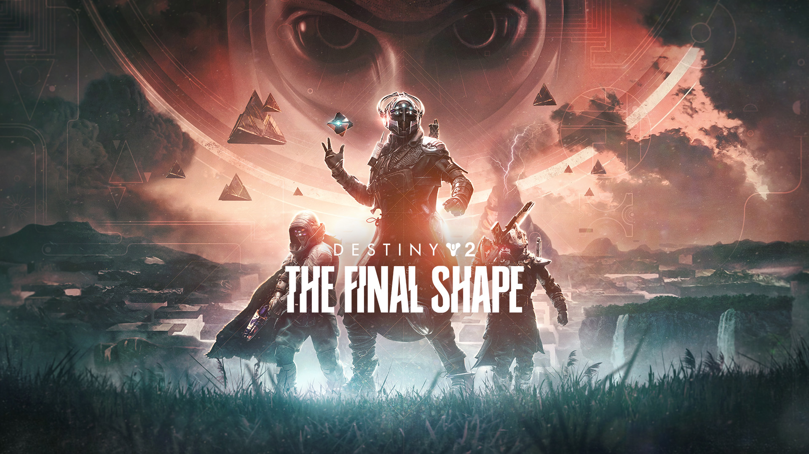

Monster Hunter World
Playtime: 1078.7 hours
Where do I even begin with this game? This is, without a doubt, one of the most
exhilarating gaming experiences I've ever had the honor to witness. Not only that, but it has also helped
strengthen my social life. I met
so many good friends through this game. Additionally, this was the game I streamed the most when I used to
stream more consistently back in the day, and it helped me kickstart my journey as a streamer. It remains
my all-time favorite game and has given me a newfound appreciation for the medium.
The combat,
the world, the weapons, the movement, and the characters (with a slightly mediocre story) make this game
almost perfect. I cannot express how much I enjoy the combat in this game. It's truly unlike any other.
The way the developers committed to their unique combat style and designed the monsters around it has
resulted in incredibly engaging and beautiful fights. If it had a bit more time to polish the story and
visuals, this would have been perfect.
Incursion: Red River
Playtime: 95.5 hours
I found this game during in the midst of the year, I had a very, extremely big itch
to play a game that features realistic gunplay, very customizable guns and a very tough and tactical
approach to gunfights. And while i've played other games similar to this, this one sits very close to my
heart as it has fulfilled one requirement that older games i played didn't and that was the fact that it
was a singleplayer title!
Most games similar to these are only ever strictly multiplayer titles
or feature some form of PVP and me not neccessarily being the best at FPS games, this game provides me
with most of the same experience i get from those other games but without the worry of cheaters, the
frustrations of dying to something you feel to be undeserving and having to always play at your best which
adds up to the stress personally. I love this game and while it is fairly brand new, still being open
beta, I see alot of potential here and I can genuinely see it being a really great and complete game in
the next year or so.
Tom Clancy's : The Division 2
Playtime: 856.7 hours
It was in the middle of the pandemic and similar to Monster Hunter: World, this
helped me with my social life in more ways that I can imagine. I met most of my online friends through
here and well, during the pandemic where quarantine, restrictions, staying at home and isolation was at an
all-time high, this game gave me something to do, something for leisure and well, something for hope.
I remember picking this game up shortly going through some rough patches in my personal life and
with my family financial situation going down the drain aswell, this game was right on time in "saving" me
from much darker places. The game as of now is going through some rough times with questionable developer
decisions and updates that have been mediocre at best but during its peak, it featured probably the best
feeling third-person shooting i've ever experienced and unfortunately ruined my experience with any other
games i've played that had something similar.
Dishonored 2
Playtime: 160.7 hours
Like the game previously mentioned, I also got into this during the pandemic and an
online friend of mine gifted me this. I played the first game of the series quite a bunch and have been
trying to save up for the second game for quite some time now. I told him about this and through his
kindness, just gifted me the game when it eventually went on sale.
This is personally my most
favorite singleplayer stealth experiences and in its genre, I don't think anything really goes over it in
terms of polish, design, quality and over-all fun value. Having played through the game for about eight
times the last I remember, this game made me appreciate the nuances that go into level design and the
importance of player interaction within the universe you set your player in. This game does justice on
both aspects and excel on it. You genuinely feel like you are a part of the world once you start playing
it. The moral system while a little bit rudimentary, was something I also really enjoyed, seeing how my
actions would be perceived not only by the characters but also the environments that I end up playing in.

Destiny 2
Playtime: 496.3 hours
I'm incredibly conflicted putting this game here, because on one hand I genuinely
enjoy and find the game incredibly addicting. The shooting while being more on the "arcadey" side, still
is executed so well alongside with the great level design, wonderful characters and a very repeatable game
loop, it genuinely is one of the more polished games in its genre.
However, with the recent
developer decisions and updates, the CEO of the game's company being accused of sever mismanagement and
the state of the game currently, It's not something I'd really recommend to anyone as of the moment. The
game is very hard to get into and takes awhile for any new player to really enjoy it. Nontheless, I still
decided to put it here as it was one of the few games that really hooked me and well, not a lot of game
are able to really do that.
Project Zomboid
Playtime: 530 hours
In terms of replayability, this game is king. There's no other game I've played that
offers more replayability.
Initially, I was skeptical about playing this due to its high skill floor, complicated mechanics, and
punishing gameplay. As a survival game, it didn’t immediately appeal to me, especially since I'd played so
many others before. However, the reason I’ve spent 530 hours on this game despite my initial hesitation is
because the love, passion, and care the developers put into it truly shine through.
There are
certain details in the game that might seem minor to an outsider, but the more you play, the more you
appreciate them. From adjusting the oven temperature for cooking to your character feeling sad and
depressed without entertainment, or even overeating, the game delivers an immersive sandbox experience.
Additionally, the modding community enhances the game tenfold.